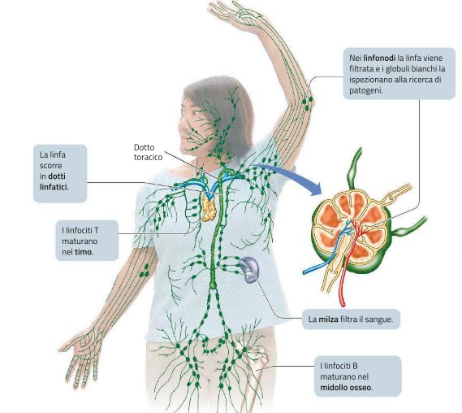

IL SISTEMA LINFATICO, L'IMMUNITÁ
L'immunità è la capacità di utilizzare le proprie difese per contrastare gli agenti partogeni, cioè gli organismi estranei che, penetrando nel nostro corpo, potrebbero provocare malattie.
Esistono due tipi principali di meccanismi di difesa: l'immunità innata e l'immunità adattativa. L'immunità innata o aspecifica comprende diversi meccanismi generici di protezione che agiscono allo stesso modo su tutti gli agenti patogeni, impedendo loro di penetrare e diffondersi nell'organismo. Queste difese operano tipicamente con notevole rapidità e includono barriere meccaniche come la cute e fagociti che ingeriscono i microrganismi invasori. L'immunità adattativa o specifica agisce, invece, contro un bersaglio ben definito (un agente patogeno o una sostanza tossica) con un'azione lenta ma precisa che comprende tre passaggi:
il riconoscimento della sostanza o dell'agente estraneo da parte dei linfociti B e T (particolari tipi di globuli bianchi);
una risposta mirata che può avvenire sia attraverso la produzione di specifiche molecole sia attraverso l'azione diretta di cellule che attaccano un particolare invasore;
la creazione di unamemoria, che immunizza l'organismo per un tempo più o meno lungo in modo che resista a ulteriori attacchi del medesimo agente esterno; la memoriaimmunologica è molto importante e ci protegge dal ripetersi di molte malattie, come per esempio la varicella.
L'intero processo è possibile perché le cellule immunitarie possiedono una proprietà unica: la capacità di distinguere tra SELF(le molecole dell'organismo stesso) e NON SELF(le molecole estranee all'organismo).

IL SISTEMA LINFATICO E LE SUE FUNZIONI
Il sistema linfatico è un sistema di vasi separati dalla circolazione sanguigna entro cui scorre un liquido chiamato linfa, che ha composizione simile al fluido interstiziale. La linfa scorre nei vasi linfatici in una sola direzione: piccoli capillari linfatici si uniscono in vasi progressivamente maggiori e infine in due vasi linfatici (chiamati dotti toracici) che si svuotano nelle larghe vene poste alla base del collo. Il dotto toracico sinistro trasporta la maggior parte della linfa proveniente dalla parte inferiore del corpo ed è molto più grande del dotto toracico destro. La linfa, come il sangue, è sospinta verso il cuore dalle contrazioni dei muscoli scheletrici e dai movimenti respiratori; inoltre i vasi linfatici, come le vene, possiedono valvole che dirigono il flusso linfatico «a senso unico» verso il dotto toracico. Il sistema linfatico svolge due funzioni:
Preleva dai tessuti e trasporta nel sangue (attraverso la linfa) i lipidi assorbiti dall'apparato digerente e il liquido interstiziale in eccesso, che altrimenti ristagnerebbe nei tessuti;
É implicato nella difesa dell'organismo grazie ai linfonodi, piccole masse di tessuto spugnoso che contengono un gran numero di globuli bianchi (macrofagi e linfociti) e sono collocate lungo il percorso dei vasi linfatici più grandi.
I linfonodi sono indispensabili per l'immunità specifica e aspecifica per diverse ragioni:
All'interno dei linfonodi proliferano e diventano attivi i linfociti B provenienti dal midollo osseo.
Agiscono come filtri e rimuovono dalla linfa i microrganismi e altri materiali estranei che vengono intrappolati dai fagociti.
Nei linfonodi vengono distrutte le cellule morte o danneggiate, e spesso anche le cellule tumorali.
GLI ORGANI LINFATICI SI DIVIDONO IN PRIMARI E SECONDARI

Gli organi linfatici primari, cioè il midollo osseo e il timo, sono necessari per la produzione dei linfociti. Nel midollo osseo sono presenti le cellule staminali da cui derivano i leucociti e tutte le cellule del sangue. I linfociti B maturano nel midollo osseo (B sta per bone marrow), mentre i linfociti T completano il loro sviluppo nel timo (T sta per thymus), una ghiandola collocata davanti alla trachea, attiva soprattutto in età giovanile. Quando hanno completato lo sviluppo, i linfociti B e T si trasferiscono nei linfonodi o negli altri organi linfatici.
Gli organi linfatici secondari, comprendono la milza, le placche di Peyer e le tonsille, formazioni localizzate in diverse parti del corpo costituite principalmente da tessuto connettivo e ricche di linfociti. Gli organi linfatici secondari hanno una funzione di difesa simile a quella dei linfonodi, anche se non filtrano la linfa perché non sono collocati sul percorso dei vasi linfatici; ognuno di essi presenta caratteristiche specifiche, osserviamo alcuni esempi:
La milza è un organo grande fortemente vascolarizzato, che filtra il sangue eliminando microrganismi e sostanze di scarto. Inoltre, elimina dal sangue gli eritrociti invecchiati, recuperando le sostanze utili che vengono inviate al fegato, funge da deposito di piastrine e sangue, e produce linfociti. A volte è necessario asportare la milza chirurgicamente (splenectomia) per evitare emorragie in caso di incidenti o traumi.
Le tonsille, disposte ad anello nella faringe, contrastano ed eliminano batteri e altri microrganismi che entrano attraverso la bocca e il naso.
Le placche di Peyer, nell'intestino tenue, svolgono un ruolo simile alle tonsille e distruggono gli agenti patogeni che possono penetrare nel nostro corpo attraverso l'apparato digerente.
L'IMMUNITÁ INNATA
Tipo di difesa Meccanismo di difesa Funzione Barriere di superficie Cute Impedisce l'ingresso di patogeni e di sostanze estranee Secrezioni acide Inibiscono la crescita batterica sulla cute. Muco Impedisce l'ingresso di patogeni; produce difensine che uccidono i patogeni. Secrezioni mucose Intrappolano i batteri e altri patogeni nelle vie respiratorie e nel canale digerente. Peli delle narici Filtrano i batteri nelle vie nasali. Ciglia Spingono verso l'esterno il muco e i materiali intrappolati. Succhi gastrici L'acido cloridrico concentrato e le proteasi uccidono i patogeni nello stomaco. Ambiente acido della vagina Limita la crescita di funghi e batteri nelle vie genitali femminili. Lacrime, saliva Lubrificano e lavano; contengono lisozima, che uccide i batteri. Difese aspecifiche cellulari, chimiche e coordinate Flora normale Compete con i patogeni; può produrre sostanze tossiche per i patogeni. Febbre Risposta generalizzata dell'organismo che inibisce la proliferazione dei patogeni e accelera i processi di riparazione. Tosse, starnuti Espellono i patogeni dalle vie respiratorie superiori. Risposta infiammatoria Limita la diffusione dei patogeni ai tessuti circostanti; concentra le difese; digerisce patogeni e cellule morte; rilascia mediatori chimici che attraggono fagociti e linfociti. Fagociti (macrofagi e granulociti neutrofili) Inglobano e distruggono i patogeni che penetrano nell'organismo. Linfociti natural killer (NK) Attaccano e lisano cellule infettate da virus o cancerose. Proteine antimicrobiche: MANCANTE Interferoni Vengono rilasciati da cellule infettate da virus per proteggere il tessuto sano dall'infezione virale; mobilizzano le difese specifiche. Proteine del complemento Lisano i microrganismi, aumentano la fagocitosi e contribuiscono alla risposta infiammatoria e a quella anticorpale.
L'immunità innata o aspecifica comprende diversi sistemi generici di protezione, che possediamo fin dalla nascita e costituiscono la prima linea di difesa dell'organismo. Negli esseri umani, essi comprendono barriere fisiche, difese cellulari e chimiche. Prima di tutto, possiamo distinguere le difese esterne da quelle interne, osservate:
--La prima e più semplice strategia di difesa consiste nel cercare di impedire agli agenti patogeni di penetrare nel corpo. Tutte le membrane di rivestimento a contatto con l'esterno fungono quindi da barriera meccanica e producono sostanze chimiche di protezione che agiscono localmente. La cute è il primo sistema di difesa aspecifica contro le aggressioni da agenti patogeni. Funghi, batteri e virus riescono solo raramente a penetrare la cute non danneggiata e in buono stato di salute; tuttavia, eventuali ferite possono aumentare notevolmente il rischio di infezioni. I batteri e i funghi che normalmente vivono e si riproducono in larga misura sulle superfici del nostro corpo senza provocare malattie vengono complessivamente indicati come flora normale. Questi ospiti naturali sono in competizione con gli agenti patogeni per lo spazio disponibile e le sostanze nutritive, e pertanto rappresentano una forma aspecifica di difesa. Le mucose dei vari apparati e sistemi del nostro organismo, quali occhi, vie respiratorie, canale digerente, vie escretorie e riproduttive, possiedono altre difese sia di natura fisica sia di natura chimica: per esempio il liquido lacrimale, il muco nasale e la saliva contengono un enzima, chiamato lisozima, che attacca le pareti cellulari di molti batteri.
--Il muco nasale intrappola i microrganismi presenti nell'aria; la maggior parte di quelli che riescono a oltrepassare questa prima barriera vengono bloccati nel muco delle vie respiratorie più profonde. Il muco e i patogeni in esso inglobati vengono poi spinti verso il naso e la bocca dalle ciglia vibratili dell'epitelio che riveste le vie respiratorie. Lo starnuto è un altro modo per rimuovere i microrganismi dalle vie respiratorie.
--Infine, i rivestimenti mucosi producono difensine, molecole peptidiche tossiche per un'ampia varietà di patogeni come batteri, eucarioti microbici e virus. Le difensine penetrano nella membrana plasmatica e sopprimono gli invasori, attraverso meccanismi non del tutto noti, ma che coinvolgono certamente la formazione di «aperture» nelle membrane, rendendole permeabili e provocando la fuoriuscita del materiale interno. Le difensine vengono, inoltre, prodotte dai fagociti, che se ne servono per uccidere i patogeni che hanno inglobato. Gli agenti patogeni che raggiungono il canale digerente incontrano altri dispositivi di difesa: il succo gastrico dello stomaco rappresenta un ambiente letale per molti batteri, a causa del suo elevato contenuto di acido cloridrico e di proteasi. Il rivestimento delle pareti dell'intestino tenue normalmente non può essere attraversato, se integro, dai batteri, ma questi vengono attaccati dai sali biliari secreti all'interno del lume intestinale. L’intestino crasso ospita numerosi batteri che si moltiplicano liberamente e che sono rimossi con le feci. La maggior parte dei batteri intestinali forma la flora normale che fornisce un beneficio all'ospite.
LE DIFESE ESTERNE
I patogeni che riescono a penetrare attraverso le superfici esterna e interna del corpo umano incontrano sistemi di difesa aspecifica più complessi, che comprendono la secrezione di varie proteine difensive e cellule dotate di attività fagocitaria.
Le proteine del complemento sono circa 30 diverse proteine antimicrobiche presenti nel sangue, che costituiscono complessivamente il sistema del complemento. In combinazioni diverse, queste proteine agiscono in una caratteristica cascata di eventi, in cui ogni proteina attiva quella successiva: dapprima le proteine aderiscono ai microbi, permettendo ai fagociti di riconoscerli e di distruggerli; poi esse attivano la risposta infiammatoria e attraggono i fagociti verso la sede di infezione; infine provocano la lisi delle cellule estranee.
Gli interferoni costituiscono una classe di glicoproteine (una proteina alla cui catena peptidica è legata una catena oligosaccaridica) che rappresenta una delle prime linee di difesa aspecifica contro le infezioni virali. Quando le cellule sono infettate da un virus, esse producono piccole quantità di interferoni che agiscono stimolando sia le cellule infette sia quelle non infette ad aumentare le difese antimicrobiche. Inoltre, gli interferoni incrementano l'attività lisosomiale che provvede alla degradazione delle proteine virali in peptidi più piccoli: questi ultimi, esposti sullamembrana plasmatica, stimolano l'immunità specifica.
I fagociti costituiscono una classe di globuli bianchi che comprende i granulociti ei monociti. Queste cellule circolano liberamente nel sangue e nel sistema linfatico; quando si sviluppa un'infezione, i granulociti fuoriescono dai vasi sanguigni e penetrano nei tessuti infiammati: qui ingeriscono i patogeni, li sopprimono liberando difensine e producendo molecole che potenziano la risposta infiammatoria, mentre i monociti si differenziano in grosse cellule fagocitarie dette macrofagi.
I linfociti natural killer (NK) sono in grado di riconoscere le cellule tumorali o quelle infettate da un virus, e di provocarne la lisi, rilasciando proteine che distruggono la membrana plasmatica (perforine).
L'INFIAMMAZIONE
In caso di infezioni che danneggiano i tessuti, l'organismo ricorre alla risposta infiammatoria. Gli eventi infiammatori contrastano i microrganismi, le tossine o le sostanze estranee presenti, ne prevengono la diffusione in altri tessuti e predispongono la riparazione della lesione. I segnali principali che contraddistinguono l'infiammazione, o flogosi, sono quattro:
Arrossamento (rubor, in latino);
Dolore (o dolor);
Calore (o calor);
Gonfiore (o anche tumor)

L'IMMUNITÁ ADATTATIVA
Le difese aspecifiche sono efficaci, ma talvolta alcuni patogeni sono in grado di superarle. Affrontiamo questi patogeni mediante un sistema di difese specifiche che utilizzano cellule di cui disponiamo fin dalla nascita, ma si sviluppano solo in seguito al contatto con gli agenti patogeni. Le difese specifiche si realizzano grazie ai linfociti B e T che lavorano in sinergia tra loro e sono coadiuvati da altre cellule e molecole. Da essi dipendono i passaggi più delicati della risposta immunitaria: il riconoscimento, la strategia della risposta e la creazione della memoria immunitaria.Pur avendo molte caratteristiche in comune, i linfociti B e T mettono in atto due tipi diversi di risposta contro i patogeni: la risposta immunitaria umorale e la risposta immunitaria cellulare. Queste risposte presentano molti aspetti comuni e agiscono in modo concertato cooperando tra loro:
I Linfociti B producono la risposta immunitaria umorale. La risposta umorale è diretta principalmente contro i virus e i batteri presenti nei liquidi corporei ed è a carico dei linfociti B. Quandovengono attivati, questi linfociti producono molecole dette anticorpi, identiche per composizione ai recettori antigenici (che per questo vengono anche chiamati anticorpi dimembrana). Gli anticorpi si riversano nel sangue, nella linfa e nei fluidi intercellulari, dove si legano ai determinanti antigenici dei patogeni: a questo punto il complesso antigene-anticorpo che risulta è facilmente riconoscibile dai fagociti, che lo eliminano.
I Linfociti T producono la risposta immunitaria cellulare. Questo tipo di risposta è diretta in modo specifico contro le cellule infettate da virus e batteri, contro funghi e protozoi, e anche contro le cellule tumorali. La risposta immunitaria cellulare viene condotta dai linfociti T localizzati all'interno dei linfonodi, nel sangue e negli spazi intercellulari. I linfociti T agiscono anche indirettamente, stimolando la produzione di anticorpi e la fagocitosi.

COSA SONO I LINFONODI?
I linfonodi sono piccoli organi ovoidali del sistema linfatico, aventi un ruolo immunitario molto importante; essi, infatti, fungono da punti di raccolta per parte dei linfociti B e T (cellule del sistema immunitario), allo scopo di intercettare e distruggere eventuali germi, sostanze estranee e/o cellule neoplastiche circolanti nella linfa (la linfa è il fluido simile al plasma, che scorre lungo i vasi linfatici e accoglie le sostanze di rifiuto presenti nei tessuti). Agendo in modo simile a dei depuratori, i linfonodi sono spesso definiti con il termine di filtri biologici.
Il linfonodo, in qualità di organo pieno, presenta una capsula, uno stroma reticolare e un parenchima formato da tessuto linfoide.
- La capsula si presenta come un rivestimento di tessuto connettivo denso formato da fibre collagene. Costituisce un'estesa superficie convessa che lungo un margine si approfonda per formare l'ilo da cui emergerà l'unico vaso linfatico efferente, i vasi sanguigni e i nervi. La capsula invia trabecole all'interno del linfonodo lungo cui la linfa penetra nell'organo. In particolare allo sbocco dei vasi afferenti l'avventizia di questi ultimi continua con la capsula, mentre l'endotelio continua con il connettivo del seno sottocapsulare uno spazio entro cui si riversa la linfa che proviene dai vasi e che contiene, nelle sue pareti, diversi macrofagi. La capsula invia poi dei sepimenti all'interno del parenchima dividendo la regione corticale in logge corticali che confluiscono poi in un'area midollare.
- Lo stroma reticolare si organizza in una rete di fibre nello spazio delimitato dalla capsula e dalle trabecole a cui aderiscono le cellule che producono le fibre stesse: le cellule reticolari o fibroblasti reticolari. Tali cellule (dette anche Fibroblastic Reticular Cells, FRC) si organizzano a formare queste trabecole chiamate condotti FRC. Tali condotti, con un diametro compreso tra 0,2 e 3 µm, sono dei veri e propri manicotti attorno a una struttura costituita da fibre parallele di collagene immerse in una rete di microfibrille di fibrillina. I condotti cominciano nel seno sottocapsulare e arrivano fino ai seni midollari e ai seni perivenulari delle HEV. I linfociti T entrano nei linfonodi tramite le HEV e si localizzano attorno a questi condotti nella corticale. La linfa che si riversa nei seni sottocapsulari si impegna anche all'interno di questi condotti. Lungo questi condotti sono localizzate diverse cellule dendritiche. Anche le cellule follicolari dendritiche collaborano alla formazione di un denso sistema reticolare, attorno al quale si organizzano i follicoli.
- Il parenchima di un linfonodo è formato sostanzialmente da tessuto linfoide. Sia dal punto di vista funzionale sia istologico si distinguono tre diverse zone che, dall'esterno all'interno, sono: zona corticale, zona paracorticale e zona midollare.
- La zona corticale è costituita da aggregati sferici o ovoidali di linfociti che formano i noduli o follicoli. Tali follicoli presentano una zona centrale, il centro germinativo e una zona mantellare formata da piccoli linfociti B vergini che circonda come un involucro il centro germinativo. I follicoli si distinguono in secondari o primari a seconda che abbiano o meno il centro germinativo.
- La zona paracorticale (o paracortex) si trova profondamente alla zona corticale e si presenta come una zona uniforme fittamente stipata di linfociti e linfoblasti con alcuni macrofagi e APC. Tra queste APC si trovano anche le cosiddette cellule a velo, delle cellule di Langerhans migrate dai territori drenati dal vaso su cui staziona il linfonodo. Caratteristiche di questa zona sono le venule a endotelio alto (HEV), un particolare tipo di struttura vascolare che rappresenta un punto di entrata nei tessuti linfoidi (tranne la milza) per linfociti che abbandonano il torrente circolatorio.
- La zona midollare è costituita da cordoni cellulari formati da plasmacellule, macrofagi e piccoli linfociti separati fra loro da seni linfatici. Tali cordoni sono supportati da una rete di cellule reticolari e sono più evidenti le trabecole che, a livello dell'ilo, accompagnano i vasi sanguigni in entrata e in uscita.
COSA SONO I LINFONODI ASCELLARI?
I linfonodi ascellari sono i linfonodi che risiedono nell'ascella; l'ascella è l'area anatomica del corpo umano situata inferiormente all'articolazione della spalla, laddove il margine laterale del torace incontra la porzione prossimale del braccio. I linfonodi ascellari sono tra le 20 e le 40 unità e, in base alla loro localizzazione, sono distinguibili in 6 gruppi, che sono:
Il gruppo pettorale (o gruppo anteriore) dei linfonodi ascellari;
Il gruppo sottoscapolare (o gruppo posteriore) dei linfonodi ascellari;
Il gruppo laterale dei linfonodi ascellari;
Il gruppo centrale dei linfonodi ascellari;
Il gruppo apicale dei linfonodi ascellari;
Il gruppo infraclavicolare (o o gruppo sottoclavicolare o gruppo deltopettorale) dei linfonodi ascellari.
IL GRUPPO PETTORALE (O GRUPPO ANTERIORE)
Il gruppo pettorale dei linfonodi ascellari comprende 4-5 unità linfonodali di dimensioni medio-grandi, che prendono posto lungo il margine inferiore del muscolo piccolo pettorale e subito dietro il muscolo grande pettorale. I linfonodi ascellari del gruppo pettorale ricevono la linfa dai vasi linfatici provenienti dai quadranti laterali delle mammelle, dai vasi linfatici superficiali del torace e, infine, dai vasi linfatici della porzione addominale sovra-ombelicale (ossia che sta sopra l'ombelico); quindi scaricano la linfa che hanno accolto, principalmente, nei linfonodi del gruppo centrale. Nota importante: i linfonodi ascellari sono elementi anatomici pari I linfonodi ascellari sono elementi pari del corpo umano; in termini pratici, questo vuol dire che, per ogni lato del tronco, ci sono tutti i diversi gruppi linfonodali sopraccitati. Il concetto di distribuzione pari dei linfonodi ascellari è importante per spiegare che ai gruppi linfonodali di un lato del corpo spetta il drenaggio linfatico delle strutture presenti nel medesimo lato; per esempio, i linfonodi ascellari del gruppo pettorale di destra accolgono la linfa proveniente dalla mammella di destra, dalla metà destra del torace e dalla porzione addominale sovra-ombelicale destra, e scaricano la stessa nei linfonodi del gruppo centrale della metà destra del tronco.
GRUPPO SOTTOSCAPOLARE (O GRUPPO POSTERIORE)
Il gruppo sottoscapolare dei linfonodi ascellari include 6-7 unità linfonodali di media grandezza, che si distribuiscono davanti al muscolo sottoscapolare, in posizione inferiore rispetto alla scapola. I linfonodi ascellari del gruppo sottoscapolare ricevono la linfa dai vasi linfatici superficiali del collo e della parte superiore della schiena; quindi, come le unità linfonodali del gruppo pettorale, scaricano la linfa ricevuta nei linfonodi ascellari del gruppo centrale.

GRUPPO LATERALE
Il gruppo laterale dei linfonodi ascellari comprende tra le 4 e le 6 unità linfonodali di grandezza intermedia, che risiedono in posizione postero-mediale rispetto alla vena ascellare e in posizione laterale rispetto al gruppo dei muscoli pettorali. I linfonodi ascellari del gruppo laterale ricevono la linfa dai vasi linfatici provenienti dal braccio (fatta eccezione per quei vasi linfatici superficiali del braccio che scorrono nella regione laterale di quest'ultimo); quindi, come i linfonodi ascellari dei due gruppi precedentemente descritti, scaricano la linfa ricevuta nei linfonodi ascellari del gruppo centrale.
GRUPPO CENTRALE
L'ormai noto gruppo centrale dei linfonodi ascellari include 3-4 unità linfonodali di dimensioni medio-grandi, che prendono posto esattamente al centro dell'ascella, immersi nel tessuto adiposo tipico della regione ascellare. Come affermato nelle precedenti sezioni, i linfonodi ascellari del gruppo centrale accolgono la linfa che è transitata per i linfonodi ascellari dei gruppi pettorale, sottoscapolare e laterale; quindi, scaricano quanto ricevuto nei linfonodi ascellari del gruppo apicale.
GRUPPO APICALE
Il gruppo apicale dei linfonodi ascellari comprende tra le 4 e le 6 unità linfonodali di dimensioni intermedie, che si distribuiscono sulla parte più alta dell'ascella, precisamente sul bordo laterale della prima costola, dietro e sopra il muscolo piccolo pettorale, e con un orientamento in direzione della vena ascellare. I linfonodi ascellari del gruppo apicale ricevono la linfa precedentemente transitata per i linfonodi ascellari del gruppo centrale, per i linfonodi del gruppo infraclavicolare (discussi nella prossima sezione), per i vasi linfatici associati alla vena cefalica e, infine, per i vasi linfatici provenienti dalla porzione periferica superiore del seno; quindi, riversano il loro contenuto di linfa, principalmente, nel tronco linfatico succlavio, nel dotto linfatico destro e nei linfonodi cervicali profondi.
GRUPPO INFRACLAVICOLARE (O SOTTOCLAVICOLARE O DELTOPETTORALE)
Il gruppo infraclavicolare dei linfonodi ascellari rappresenta una categoria a parte, in quanto le 6-12 unità linfonodali costituenti risiedono al di fuori della regione anatomica dell'ascella; per la precisione prendono posto nella scanalatura presente tra il muscolo deltoide e il muscolo grande pettorale, subito sotto la clavicola. I linfonodi ascellari del gruppo infraclavicolare accolgono la linfa dai vasi linfatici provenienti dalle porzioni laterali di mano, avambraccio e braccio; quindi, scaricano il loro contenuto di linfa prevalentemente nei linfonodi ascellari del gruppo apicale.
QUALE FUNZIONE SVOLGONO I LINFONODI ASCELLARI?
I linfonodi ascellari hanno la vitale funzione di drenare e filtrare la linfa proveniente dagli arti superiori, dalla parte di tronco che va dall'ombelico all'inizio del collo e, infine, dalla parte di schiena che si trova superiormente alle creste iliache. Entrando maggiormente nei dettagli, i linfonodi ascellari drenano e filtrano la linfa che proviene da:
Il braccio, l'avambraccio e la mano;
I quadranti laterali del seno;
La porzione periferica superiore del seno;
Le porzioni più superficiali del torace;
La regione addominale sovra-ombelicale;
La schiena a partire dalle creste iliache fino al collo.
LE PATOLOGIE
I linfonodi ascellari sono elementi di notevole rilevanza clinica, in quanto sono oggetto di un processo di ingrossamento (linfadenopatia ascellare) al presentarsi di condizioni cliniche come:
Le malattie infettive che coinvolgono le prime vie respiratorie (es: influenza, raffreddore e faringite);
Il morbillo e la mononucleosi;
Le infezioni cutanee localizzate nella parte superiore del corpo, specie se combinate a ferite della pelle;
L'AIDS;
L'otite;
I tumori maligni con sede nel tronco, come per esempio il tumore al seno o il tumore al polmone;
Le metastasi derivanti dalla suddetta tipologia di tumori maligni.
ALCUNE CURIOSITÁ SUL RUOLO DEI LINFONODI IN PRESENZA DEL TUMORE AL SENO
Responsabile di un dolore all'ascella più o meno intenso, la linfadenopatia ascellare è uno dei segni più tipici del tumore al seno, risultando di conseguenza un elemento cruciale alla formulazione della diagnosi finale. In presenza della suddetta temuta neoplasia, il sistematico verificarsi dell'ingrossamento dei linfonodi ascellari è da imputarsi principalmente al fatto che ben il 75% della linfa circolante nelle mammelle fluisce nel gruppo pettorale e in quello apicale dei linfonodi ascellari. L'analisi in laboratorio di alcune cellule provenienti dai linfonodi ascellari permette ai medici di stabilire lo stadio (o stadiazione) della sopraccitata neoplasia. L'intervento di prelievo dei linfonodi ascellari consiste in un'operazione chirurgica nota come dissezione ascellare o dissezione dei linfonodi ascellari; quest'ultima è utile non solo in ambito diagnostico, ma anche in fase di trattamento.
COME MAI IL SISTEMA IMMUNITARIO RICONOSCE LE CELLULE COME NON SELF?
Il riconoscimento dell'antigene:

Il bersaglio di una risposta immunitaria adattativa è un antigene, cioè una molecola che è riconosciuta come estranea da parte dei linfociti B e T e che stimola una risposta immunitaria. La maggior parte degli antigeni sono carboidrati o proteine; per esempio, parti della parete cellulare di un batterio, proteine sulla superfice di una spora o di un granello di polline, oppure particolari molecole disposte sulla superfice di una cellula tumorale. Tuttavia, i linfociti presentano sulla propria superfice migliaia di molecole chiamate recettori antigenici, che sono proteine di membrana in grado di riconoscere e legare uno specifco antigene bersaglio. La porzione di antigene riconosciuta da un recettore è detta determinante antigenico; antigeni di grosse dimensioni possono presentare più determinanti, ognuno dei quali è legato da un suo recettore. Tutti i recettori di uno stesso linfocita sono uguali tra loro ma ogni linfocita presenta recettori per un diverso determinante antigenico. Come si ottiene tanta varietà? I geni che codificano per i recettori antigenici contengono centinaia di piccoli segmenti di DNA che vengono ricombinati all'interno dei linfociti in maturazione; al termine di questa ricombinazione, ogni linfocita presenta un proprio recettore ed è detto immunocompetente. Il risultato è una moltitudine di linee cellulari, ciascuna delle quali produce uno specifico recettore antigenico. Poiché ogni particella estranea contiene decine di molecole che possono assumere il ruolo di antigene, sono molti i linfociti che rispondono all'invasione da parte di uno stesso patogeno. Quando il recettore riconosce l'antigene, forma con esso un legame simile a quello che si forma tra enzima e substrato. Il legame del recettore con il suo antigene determina quindi l'attivazione del linfocita e l'inizio della risposta immunitaria.
Il corretto funzionamento del nostro sistema immunitario si basa sulla sua capacità di distinguere tra le cellule dell'organismo e le cellule estranee (batteri, cellule infettate da virus, cellule tumorali ecc.) che devono essere attaccate. Per fare ciò, le cellule del sistema immunitario devono riconoscere gli antigeni non self (molecole estranee), mentre non devono rispondere alle molecole self (tipiche del nostro organismo). Durante la ricombinazione del DNA che porta all'acquisizione dell'immunocompetenza, è prodotto un enorme assortimento di recettori antigenici. Come fa l'organismo ad assicurarsi che questi riconoscano solo gli antigeni non self? Ciò è possibile grazie alla delezione clonale, che fa sì che i linfociti che riconoscono le molecole self siano eliminati per apoptosi, o morte cellulare programmata. Questo processo inizia prima della nascita e fa in modo che il sistema immunitario non attacchi le cellule sane dell'organismo. Inoltre, durante lo sviluppo, il sistema immunitario impara anche a non attaccare gli antigeni presenti nel cibo.
In quest'immagine possiamo osservare la "Delezione clonale". Durante lo sviluppo fetale, i linfociti vengono a contatto con le proteine e i polisaccaridi di membrana delle cellule corporee. I linfociti che riconoscono gli antigeni self sono eliminati.
IL RUOLO DEI LINFONODI NEL CANCRO
Il cancro al seno si sparge spesso ai linfonodi ascellari, così catturando le cellule tumorali ad altre parti del corpo. Poiché i linfonodi filtrano le sostanze nocive, sono esaminati solitamente per individuare la presenza di cellule tumorali che hanno attraversato il vertice sul loro modo raggiungere altre parti del corpo. Durante la chirurgia di rimozione del petto, i linfonodi sono divisi spesso dai chirurghi per studiare le dimensioni che il cancro ha sparso. Ciò è conosciuta come dissezione ascellare di linfonodo. La dissezione ascellare di linfonodo in primo luogo è stata utilizzata come componente del trattamento di cancro al seno nello XVIII secolo. La dissezione da allora ascellare si è trasformata in in una procedura standard seguita per mettere in scena dell'ascella e del trattamento dei pazienti di cancro al seno. I linfonodi positivi e negativi indicano la presenza e l'assenza di celle del tumore nei linfonodi e sono uno degli indicatori chiave del tipo di trattamento richiesto per un paziente particolare. Le guide della dissezione di linfonodo eliminano le cellule tumorali dai vertici, così impedendo la metastasi del cancro in larga misura. I pazienti nelle fasi iniziali di cancro al seno hanno una probabilità 30-40% di avere vertici ascellari positivi. Se il cancro si è sparso ai linfonodi ascellari, il chirurgo raccomanderà una dissezione di vertice ascellare. Il numero dei vertici commoventi varia da un paziente ad un altro ed in modo dalla decisione in gran parte è basata sul sito del cancro e non del numero dei vertici positivi. Molti studi hanno provato che la dissezione ascellare di linfonodo aiuta nel controllo locale della malattia, così il miglioramento della sopravvivenza globale dei malati di cancro. La dissezione ascellare del paletto di tariffa di ricorrenza del cancro è stata indicata per essere meno di 2%. Quindi, l'organizzazione dell'ascella è un punto importante nel trattamento di cancro al seno. Lo stato del linfonodo ascellare è una variabile prognostica chiave in persone con carcinoma del petto della fase iniziale. Il numero dei vertici positivi egualmente ha importanza prognostica. Sebbene la rimozione dei linfonodi riduca il rischio di cancro che si sparge ad altre parti del corpo, non può distruggere le cellule tumorali che possono già spargersi ad altre parti. Tuttavia, la partecipazione dei linfonodi dà le comprensioni importanti nella natura e nella fase del cancro e così aiuta medici nello sviluppare una pianificazione su misura del trattamento per un paziente.
LIVELLI DEI VERTICI ASCELLARI E DI DISSEZIONE:
Livelli di vertici ascellari e di dissezione I linfonodi ascellari sono classificati in tre livelli compreso l'ascella bassa, la metà di ascella e l'alta ascella. Sulla base dei quali livello di vertici ascellari è commovente, il chirurgo esegue i vari livelli di dissezione ascellare. In una maggioranza dei casi, dei Livelli I o II i vertici sono eliminati se il vertice della sentinella è positivo o se c'è un vertice cancerogeno presente nell'ascella. Le donne con cancro al seno dilagante subiscono solitamente la dissezione ascellare con una mastectomia.
ESISTONO DELLE CURE DEFINITE VACCINI CONTRO I TUMORI?
I vaccini che prevengono alcuni tipi di cancro sono normali vaccini diretti contro agenti infettivi che possono causare alcuni tumori. È il caso del vaccino contro il virus dell’epatite B, responsabile di molti casi di cancro del fegato, e di quello contro i ceppi di virus del papilloma umano (HPV) responsabili del tumore della cervice uterina. Per quanto riguarda altri tumori, la scienza non è ancora in grado di trovare una risposta su quelle che potrebbero essere le cure, ad esempio del cancro, ma si fanno sempre delle analisi o meglio delle visite mediche per prevenire la malattia.